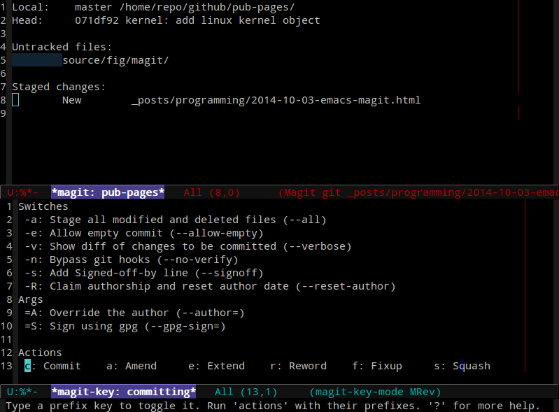
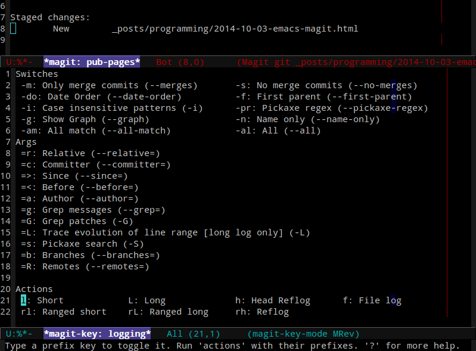
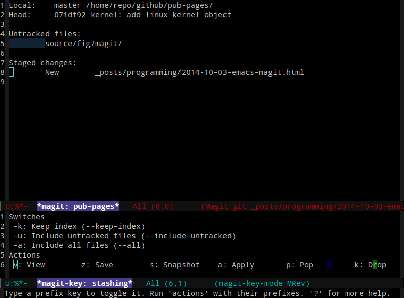

Emacs Magit
Table of Contents
1 简介
1.1 magit
magit是emacs下专门为git设计的一个工作模式， 最好在emacs-24.1和git-1.8.2以后的版本使用。
1.2 基本功能
在仓库下面执行 M-x magit-status 就能进入magit模式，
这个命令在我工作中使用极其频繁，因此做了快捷键绑定。
(defadvice magit-status (around magit-fullscreen activate) "full-screen magit-status" (window-configuration-to-register :magit-fullscreen) ad-do-it (delete-other-windows)) (global-set-key (kbd "<f8>") 'magit-status) ; q - quit
在这个模式下有许多按键可以使用，可以执行 C-h m 查看该模式下的所有按键，
下表是最常用到的按键。
| g | 刷新状态，也可以用 magit-status 刷新 |
| s | 添加当前更改 |
| u | 撤销当前更改 |
| k | 删除当前更改 |
| c | 提交 |
| P | 远程推送 |
| F | 远程拉取 |
| b | 分支切换 |
| l | 列举日志 |
1.3 状态区管理
状态区分三个大区，如下表所示。
| Untracked files | 未跟踪，不能查看具体内容 |
| Unstaged changes | 已更改未提交，能看到diff hunk |
| Staged changes | 已提交的更改，能看到diff hunk |
这里说到状态区，主要是对diff hunk的操作， 所有对diff hunk的操作是通用的， 即后面会讲到查看log的时候也能开启diff hunk， 都是创建一个临时缓冲区来显示。
在状态窗口下，可以折叠和打开要显示的diff级别， 数字按键1、2、3、4用于控制显示深度，但是只能控制当前区域。 M-1、M-2、M-3、M-4也是控制显示深度，但是是控制所有区域的显示深度。 其实经常用到的是TAB，TAB按键用于折叠和打开当前区域。
最让我喜欢的是可以直接在diff区按回车进入到准确的代码区， 能够精确到一个字符。
常用的快捷键如下表所示：
| n | next diff hunk |
| p | prev diff hunk |
| + | 增大diff区 |
| - | 减小diff区 |
^ |
goto parent section |
1.4 处理未跟踪/已更改文件
| s | 添加更改，可以精确控制diff区 |
| u | 撤销更改，可以精确控制diff区 |
| k | 删除更改，可以精确控制diff区 |
| C-u S | 添加所有更改 |
| C-u s | 会询问要添加的文件 |
| i | 忽略，将文件加入到.gitignore |
| I | 忽略，将文件加入到.git/info/exclude |
| S | 添加所有diff区 |
| U | 撤销所有diff区 |
| + | 增加diff区显示宽度 |
| - | 减少diff区显示宽度 |
| c | 进入提交会话 |
提交会话可以选择的参数如下图所示。 
编辑提交信息完成之后按 C-c C-c 退出编辑，
按 C-c C-k 取消提交。
1.5 查看历史
在状态区输入 l 即可查看历史，具体子模式如下图所示。

常用指令的含义如下表：
| 主按键 | 子按键 | 功能 |
|---|---|---|
| l | 进入历史会话 | |
| l | 紧凑格式，每个提交占用一行 | |
| L | 摘要格式，包含提交信息和更改摘要 | |
| h | HEAD log，HEAD停留历史，每个位置占用一行 |
一般我们看历史，都会去查看具体修改了那些内容，
如果要看最近一次提交的修改内容，其实没有必要进入历史会话，
直接在状态模式下移动到提交标题点击回车就可以看到diff内容，
magit会专门创建一个 *magit-commit* 缓冲区显示diff。
对diff缓冲区的操作和状态区管理提到的方法完全一样。
如果要查看早期提交的内容，如 l l 会显示历史信息，
创建一个叫 *magit-log* 的临时缓冲区。
在该缓冲区任意提交处按回车就能打开一个 *magit-commit* 缓冲区。
在历史缓冲区也可以使用 n/p 进行上下移动，和普通移动的不同之处在于，
它会更新diff显示，不过反映比较慢，有时候会比较卡。
在历史输出中，有许多可用的高级按键：
| a | 将提交应用到当前分支 |
| A | 在没有冲突的情况下将提交应用到当前分支 |
| v | 反提交 |
| C-w | 复制sha1 |
| = | 和标记的提交生成diff |
| . | 标记/反标记 |
1.6 查看差异
| d | 查看工作树和其他版本的差异 |
| D | 查看任意两个版本间的差异 |
| v | 反提交选中的差异 |
1.7 标签
| 主按键 | 子按键 | 功能 |
|---|---|---|
| t | 进入标签会话 | |
| c | 创建标签 | |
| k | 删除标签 |
1.8 重置
| x | 指定要重置到的提交，默认重置到HEAD |
| X | 重置到最近一次提交，会删除更改，谨慎使用 |
1.9 暂存区
按键 z 进入暂存区会话，如下图所示。

1.10 分支/远程管理
| 主按键 | 子按键 | 功能 |
|---|---|---|
| b | 开启分支管理菜单 | |
| b | 切换分支 | |
| c | 创建分支 | |
| k | 删除分支 | |
| C-u k | 删除分支，即便未合并也能删除 | |
| r | 重命名分支 | |
| v | 进入分支管理器 | |
| M | 开启远程管理菜单 | |
| a | 添加远程仓库 | |
| k | 删除远程仓库 | |
| r | 重命名远程仓库 | |
| b v | 分支管理器，上面的子命令都可使用 | |
| RET | 切换 | |
| T | 更改跟踪的远程分支 | |
| w | 显示其他和当前分支相关的分支 | |
| P | 进入推送会话 | |
| P | 推送分支 | |
| f | 进入fetch会话 | |
| f | git fetch | |
| F | 进入pull会话 | |
| F | git pull |
1.11 合并/变基
| 主按键 | 子按键 | 功能 |
|---|---|---|
| m | 进入合并会话 | |
| m | 开始合并 | |
| X | 退出合并 | |
| e | 处理冲突 | |
| S | 添加冲突解决文件 | |
| R | 进入变基会话 | |
| E | 进入交互式变基 | |
| R C | 处理完冲突后继续 | |
| R S | 忽略冲突提交 | |
| R A | 退出变基 |
交互式变基操作的功能非常简洁使用，出现冲突的时候可以看到冲突区， 修改起来也非常方便，提交之后接着处理即可。
1.12 子模块
| 主按键 | 子按键 | 功能 |
|---|---|---|
| o | 进入子模块会话 | |
| u | update | |
| i | init | |
| b | update and init | |
| s | sync |
2 参考资料
- Magit User Manual 在emacs下执行
C-h i进入info页面，找到magit查看